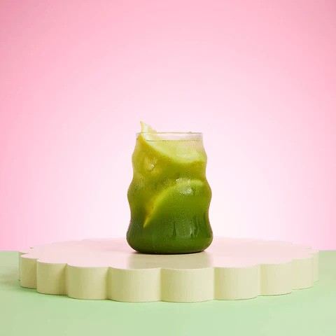

Back to Recipe Homepage!
Matcha Lemonade

Fancy a matcha but don't fancy consuming a lot of milk? A matcha lemonade is the perfect pick-me-up
treat for you! With a splash of added lemon, this treat is full of anti-oxidants and goodness!
Ingredients Required
- One Half Teaspoon of Ceremonial Grade Matcha
- Cold Water
- Hot or Boiling Water - 80c is preferred
- 250ml of Lemonade
- OPTIONAL: Lemon to garnish